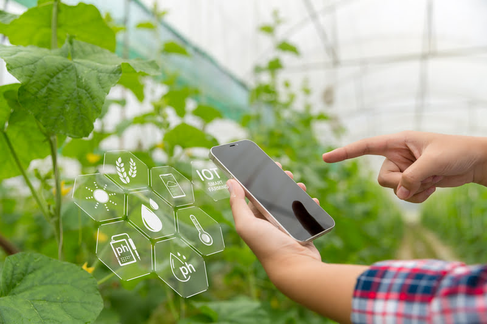

A transformação digital no campo refere-se à aplicação de tecnologias digitais no setor agrícola para melhorar a eficiência, produtividade e sustentabilidade. A transformação digital na agricultura integra tecnologia para otimizar práticas agrícolas, como a automação e a robótica. Ela envolve a coleta e análise de dados em tempo real. Além disso, impulsiona a agricultura em ambientes controlados. A otimização da cadeia de suprimentos, acesso a informações e mercados, e o monitoramento ambiental são aspectos-chave dessa transformação. Com isso, melhorar a produtividade, sustentabilidade e eficiência do setor agrícola.
